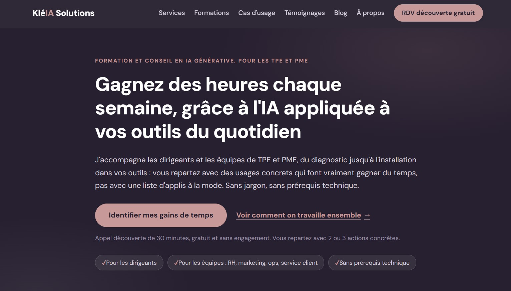

Site KléIA Solutions
Le site vitrine de mon activité de formation et conseil IA pour les PME et TPE : kleia-solutions.fr. Pas juste une page de présentation, un vrai système commercial : quiz de maturité IA, prise de rendez-vous, formulaire de contact, tout relié automatiquement à un CRM.
Le point de départ
KléIA Solutions, c'est mon activité de conseil et formation IA pour dirigeants et équipes de PME/TPE : du diagnostic à l'installation concrète des outils. Il me fallait un site qui porte ce positionnement, capte des prospects, et qualifie les demandes avant même le premier échange.
Rien n'a commencé par du code. Avant la moindre ligne HTML, on a fait le travail qu'on ferait pour n'importe quelle mission client : une étude de marché sur le secteur de la formation IA pour PME (adoption réelle, freins, budgets), une analyse des sites concurrents (positionnement, offres, ce qui manquait), et une recherche des vraies questions tapées sur Google par des dirigeants et des salariés au sujet de l'IA en entreprise. Ce sont ces questions, pas une liste de sujets inventée à l'avance, qui ont déterminé les 15 articles de blog du site.
Deux versions du site ont ensuite été construites en parallèle, par deux assistants IA différents à partir du même brief, pour comparer les partis pris : l'une gardait des tarifs chiffrés et un quiz de maturité IA en lead magnet, l'autre avait un modèle d'audit gratuit plus clair et deux fois plus d'articles de blog. Plutôt que de choisir l'une contre l'autre, j'ai fusionné le meilleur des deux dans une troisième version.
Ce que j'ai construit
Le site final compte une dizaine de pages principales (accueil, services, formations, cas d'usage, témoignages, à propos, contact) et une quinzaine d'articles de blog, en HTML/CSS/JavaScript pur, sans framework. Chaque page a un objectif de conversion unique : réserver un appel découverte gratuit.
La charte graphique n'a pas été réinventée pour l'occasion : j'avais déjà mon propre fichier de charte (couleurs, typographies, logo) construit en amont pour mon activité, directement branché sur le site pour garder une identité visuelle cohérente entre tous mes supports.

Le vrai travail n'était pas la mise en page, mais tout ce qu'il y a derrière : un quiz de maturité IA en 10 questions qui envoie ses résultats vers un CRM Airtable dédié via un workflow n8n, un formulaire de contact qui fait la même chose, une prise de rendez-vous Google Calendar sans double réservation, et un suivi Google Analytics branché pour voir concrètement qui visite le site, quelles pages retiennent l'attention et d'où viennent les visiteurs.
Un bug a bien résumé le niveau d'exigence nécessaire pour qu'un tel système soit fiable : le quiz avait l'air de fonctionner (page de confirmation affichée), mais n'envoyait en réalité aucune donnée nulle part, un preventDefault() manquant faisait quitter la page avant que l'appel réseau vers n8n n'ait eu le temps de partir. Invisible tant que personne ne vérifie dans le CRM.
Ce que ça m'a appris
Un site vitrine qui "a l'air de marcher" et un site qui marche vraiment sont deux choses différentes. Tester en conditions réelles (un vrai formulaire soumis, une vraie ligne qui doit apparaître dans le CRM) a révélé plusieurs bugs invisibles à l'œil : bouton de rendez-vous illisible sur sa propre page à cause d'une règle de couleur mal ciblée, certificat HTTPS resté bloqué plus de 48h sans lien avec la configuration DNS, favicon SVG non affiché par Google dans les résultats de recherche.
J'ai aussi appris à faire tester le site par des tiers avant de le considérer terminé : deux collègues ont remonté des bugs mobiles (menu qui ne s'affiche pas correctement, cartes de témoignages mal dimensionnées) et des points d'ergonomie que je ne voyais plus après avoir passé trop de temps dessus.
Ce qui me marque le plus en regardant en arrière : ce site complet, étude de marché comprise, m'a pris 4 à 5 jours. Il y a quatre ans, pendant mon Mastère en stratégie digitale, j'avais un projet de site à construire sur toute une année scolaire, et c'était nettement plus laborieux qu'aujourd'hui avec Claude. La bascule n'est pas seulement une question de vitesse : c'est le même travail de fond (recherche, structure, contenu) qui devient accessible à une non-développeuse en quelques jours plutôt qu'en plusieurs mois.
Combien ça aurait coûté en le faisant faire
Ce site n'est pas qu'une page vitrine : c'est une étude de marché, une analyse concurrentielle, 15 articles de blog écrits à partir d'une vraie recherche de mots-clés, et un système commercial complet (quiz, CRM, prise de rendez-vous, analytics). Reconstituer ce périmètre en le confiant à des prestataires séparés donne, sur la base des tarifs freelance et agence observés en France en 2026 :
Total réaliste : entre 9 000 et 17 500 €, sans même compter les automatisations n8n/Airtable (formulaires reliés à un CRM, workflows de qualification des leads), qui sortent complètement du périmètre d'un devis de site vitrine classique et représenteraient une prestation à part chez un intégrateur no-code.
C'est exactement ce genre d'écart que j'accompagne chez KléIA Solutions : montrer à des dirigeants et des équipes de PME/TPE comment construire eux-mêmes ce qu'ils auraient sous-traité à prix fort, avec les bons outils IA et une méthode claire. Si vous voulez apprendre à faire pareil dans votre activité, ou simplement comprendre par où commencer, réservez un appel découverte gratuit avec KléIA Solutions.